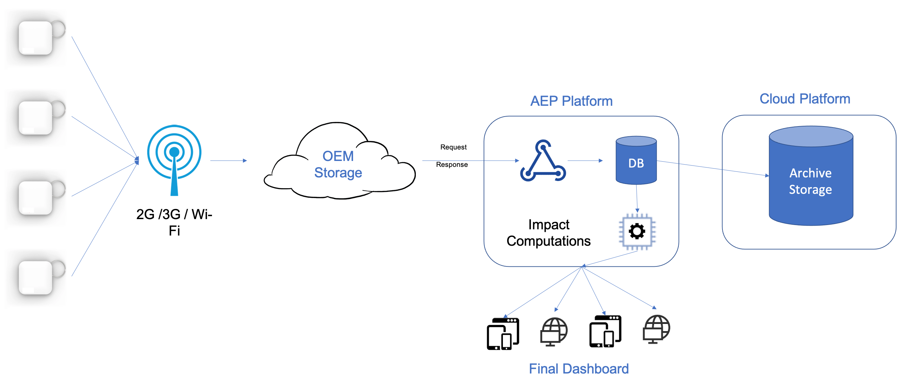

Cross-country Asset Tracking
 Snapshot of the asset dashboard given to the client
Snapshot of the asset dashboard given to the client
- CLIENT PROBLEM
The client were facing problems with cargo damage while in transit which were resulting in huge losses for them. Also, since the transit included multiple contractors responsible for different stretches of the overall route, and nobody was taking responsibility for the damages, they were at a loss and had no idea how to rectify this.
- OUR SOLUTION

We created an end-to-end asset tracking system for the client. The clients were given low-cost devices housing different sensors to include them with their shipments. These devices were very small (about 2cm x 2cm x 1cm) and were tested for harsh weather. Also, these devices were equipped with a battery, a GPS and cellular communication technology along with the accelerometer, humidity and temperature sensors. These were configured to be used as one time use devices to save on device recovery costs / logistics. They were configured to report information all along the journey and last the whole shipment time without the need of a recharge.
Thresholding was done on the accelerometer sensor housed in the device to store high impacts faced by it, which would directly correlate with the damage faced the equipment. These raw accelerometer values were then configured to be sent to the cloud managed by the manufacturer. This data was then available to be used using simple API requests.
The raw data collection and conversion to impact system was built on an application enablement platform. This resulted in quick prototyping and testing of the proof of concept. The processed data was then sent to a live dahsboard which was shared with the client for their perusal. This dashboard offered several important metrics such as the last known location, temperature and battery of the device. It also showed the impact values versus timestamp which were recorded by the device.
- VALUE GENERATED
From using this solution, we were able to ascertain different impact values faced by the device during different portions of the journey. This helped the client to visualise and piece together possible regions where the shipment was getting damaged. Our analysis found that most of the impacts registered by the device were when the device was travelling from the factory to the ports, which was contrary to the earlier belief of the client that most of the damage was being caused during the ship route. This allowed the client to focus on that section and helped them save a lot of revenue spent on replacing damaged products as well as save the reputation of the company.
Prasang Gupta
Senior Associate, Emerging Technologies
My research interests include distributed robotics, mobile computing and programmable matter.